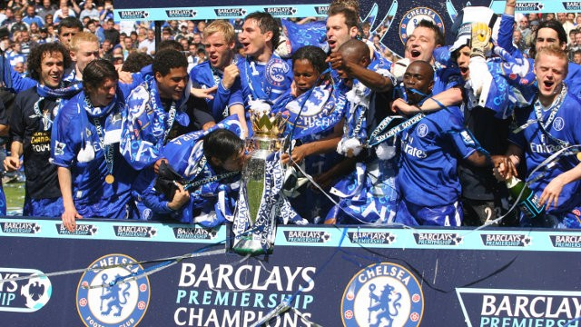
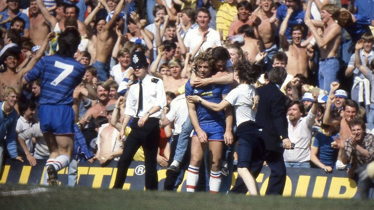

联赛冠军

2016/17英格兰超级联赛
孔蒂执教的第一个赛季，蓝军提前两轮获得英超冠军
2014/15英格兰超级联赛
在穆里尼奥的带领下，蓝军提前3轮夺冠
2009/10英格兰超级联赛
38场比赛积86分夺冠，破纪录地打进103球
2005/06英格兰超级联赛
在俱乐部百年大庆的赛季38轮比赛积91分，领先第二名8分，轻松实现卫冕

2004/05英格兰超级联赛
38轮95分夺冠
欧战奖杯
2012/13欧足联欧洲联赛
决赛（含加时赛）：切尔西2-1本菲卡
2011/12欧足联冠军联赛
决赛：切尔西1-1拜仁慕尼黑（点球4-3）

1998欧足联超级杯
切尔西1-0皇家马德里，波耶特破门建功
1997/98欧足联优胜者杯
决赛：切尔西1-0斯图加特，佐拉替补登场20秒锁定胜局
1970/71欧足联优胜者杯
决赛重赛：切尔西2-1皇家马德里
联赛杯
1997/98联赛杯
决赛：切尔西2-0米德尔斯堡
1964/65联赛杯
两回合总比分：切尔西3-2莱斯特城
社区盾杯
2009英足总社区盾
切尔西在温布利大球场2-2战平曼联，点球决战4-1取胜！
2005英足总社区盾
切尔西在卡迪夫2-1战胜阿森纳！
2000英足总慈善盾
切尔西在温布利大球场2-0战胜曼联！
1955英足总慈善盾
切尔西在斯坦福桥3-0战胜纽卡斯尔！
其他赛事
1988/89第二级别联赛冠军
46轮 99分 重返顶级联赛

1983/84第二级别联赛冠军
42轮 88分 重返顶级联赛
1989/90英格兰足总会员杯
切尔西 1-0 米德尔斯堡
©All rights reserved. | Design:Zida Zhang